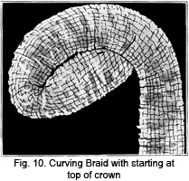

1928—The New-Way Course in Millinery and Hat Design
Lesson 9—Covering Crowns
Making and Draping the Crown of the Hat
It is very often the crown that determines whether the hat is to be a success or a failure. A well-made correctly finished crown is essential if the finished hat is to be attractive and becoming.
Not only must it be well-made, but the crown must also be well-covered, well draped. It is a study in itself, an important phase of millinery art. This lesson is devoted solely to hat crowns, their making and draping. By the time you have completed this lesson you should be able to approach the making of any type of crown in millinery with absolute confidence. Everything is reduced to its simplest possible form and you should find pleasure in mastering each phase of crown making and draping.
Considering the fact that it plays so important a part in millinery, one would expect crown making to be difficult. But it is really quite simple. One must bear in mind of course, that the lines and coloring of the wearer must be carefully studied, for without harmony in the crown how can one hope to have harmony in the finished hat. The height of the crown depends upon the height of the wearer; the high crown is for the short person, the low crown is for the tall person. But one must be careful to avoid extremes, for nothing can be more distasteful and inharmonious than a too-high crown on an extremely short person. The effect is bound to border on the ludicrous.
The Sectional Crown Tip
Every good milliner knows how to make correct sectional crown tips of velvet and other hat materials. The method you will find simple if you will follow these directions carefully. Read through the directions once carefully, and then begin from the first step and actually carry out the directions with sample materials.
1. From the front of the crinoline crown tip which you have attached to the side crown band, when making the frame, measure the distance to the back. This measure should be from edge to edge of the crown tip.
2. Now cut a circle of plain wrapping paper, the diameter of which is the exact measure you have just taken. Be very sure that this circle will lap over the edge of the side crown the same distance as the crinoline crown tip.
3. Divide the circle into quarters and cut exactly on the quarter lines. Keep one of these sections for a pattern.
4. Fold your material so that four sections can be cut at one time, and lay the pattern on it. If you are using velvet, see that the nap runs to the back. You must be very careful about this, for even though it may seem a minor detail you will find that velvet that runs the wrong way will become shabby very soon. Cut, allowing one-half inch for seams at the straight edges.
5. You are now ready to put the crown tip together. Take one piece and lay it flat on the table.
6. Take a second piece and make an underturning wide enough to take a cord.
7. Lay this second piece on the first so that one-half of the circle is formed, the first section being lapped at the seam. The cord may be run through the casing after the seam is stitched.
8. Proceed to arrange the other two pieces in the same manner. When these sections are finished and placed in their proper position the tucks for the cords must be turned in the same direction.
9. Now stitch along the turned edge through the three thicknesses of the material, far enough away from the edge to form a casing for the cord. Draw the cord through these casings.
10. Lay one of these joined sections flat on the table.
11. Turn the straight edge of the other section under to make a casing for the cord.
12. Place this turned edge over the straight edge of the other section and baste in place.
13. Now stitch along the turned edge, leaving a casing for the cord. Draw the cord through this casing.
14. The center front of this corded crown tip should now be pinned to the center front of the side crown band of the hat frame. Pin also the center back to the center back, the side of the band to the side of the crown tip. Pin halfway between these points so that the crown tip is firmly and correctly attached to the side crown band. Do not stretch the tip; it must be applied without stretching the bias edges. If the edges are drawn the least bit out of position, if the tension is not absolutely correct, the lines and style of the finished hat will be marred.
15. You are now ready to sew the edge to the binding and crinoline tip at the top of the side crown band. Use the milliners' back stitch.
You may cut a plain crown tip in exactly the same manner as the crinoline crown tip is cut. As before mentioned, this can be basted or pasted to the crinoline and both sewed to the side crown band with one line of small back-stitches.
Before proceeding with the next paragraph on side crown drapes, be sure that you have mastered thoroughly the preceding paragraphs on the crown and sectional crown tip. Rather spend an extra day or two on the lesson than skim through it hastily and be forced to refer to the lesson again and again throughout the course.
Conventional Side Crown Drape
class="clear"By "conventional" we mean the usual, the customary side crown drape—the type of drape commonly used in millinery. It is quite simple to make.
1. Make and sew a plain crown tip to the top of a straight crown. This crown will have a gently rounding edge, where the crinoline top curves away from the buckram sides.
2. Measure the size around the crown band and also the exact height.
3. Cut a strip of the hat material one inch wider than the crown and one-half inch longer than the headsize. The material is usually used on the bias.
4. Proceed to close the back seam, using a plain seam on the wrong side. No selvedge should be allowed to remain in this seam.
5. Slip this circle over the crown of the hat, the seam at the center back.
6. Beginning at the center front, turn one-half inch at the top edge over a brace wire which has been cut to fit the crown exactly. Pin this in place, the pins being about one inch apart and passing under the wire. This wire should come just above the wire on the top of the side crown. Do not lap it, but use a milliners' clasp. (These clasps can be obtained in any millinery supply shop, where you purchase your wire)
7. Sew down the wire, using milliner's back stitch. This stitch should be taken with the needle slanting upward, and the stitch drawn up under the wire so that it will not show.
8. Bring the lower edge down until the side crown is perfectly smooth. Then turn the edge over the lower edge of the side crown and sew to binding with catch stitch or diagonal basting. Fig. 2 shows the crown tip with tucks. This may be made plain.
The Modified Crown Drape
Now let us see just how the modified crown is covered. This type of crown is block-shaped, flat on top and all flat edges. There are no seams in the buckram as this hat is shaped on a block. Many ready-to-wear shapes are of this type and can be purchased very reasonably in millinery shops.
1. Cut the crown tip and side crown in exactly the same way as you cut the plain crown tip for the straight crown.
2. Measure the headsize and cut the drape for the side crown making it five inches wide and as long as the headsize plus one inch.
3. The ends of the side crown strip should be joined with a plain seam which comes at the center back of the hat.
4. Now join the crown tip to the upper edge of the side crown drape using a plain seam. The back stitch should be used to make this seam. Trim carefully, and if you are using velvet be sure that the nap runs to the back.
5. At this point, turn the work right side out. Slip it over the buckram crown gently pulling until the crown tip fits the top of the crown perfectly and lays entirely flat and smooth.
6. Turn one-half inch of the lower edge of the side drape over the lower edge of the frame.
7. Attach this edge to the binding, using either a catch stitch or a diagonal basting stitch.
8. Now proceed to draw the side drape into graceful folds at the side of the crown. It takes practice and study until you are able to drape the material gracefully and attractively—but practice makes perfect and there is no reason why you cannot be perfect if you try hard enough.
Round Crown Drape
When a crown is round from top to headsize, it is called the "Round Crown." It can be made with or without a buckram frame underneath. Any type of material may be used for this type of crown, from finest lace or net to velvet. If a buckram frame is used it may be purchased ready to use, though it can be made to advantage at home.
If transparent material is used for making the round crown drape, no foundation is employed. The seams must be very carefully and neatly made, otherwise the effect will be marred. If a light-weight material that is not transparent, such as satin, is used, it is sometimes found best to use a light-weight interlining. It may be of crinoline, but it should be heavy enough to add body to the hat. Of course no interlining is used if the crown has a buckram foundation. If the crown is of heavy velvet or plush, no foundation and no interlining are necessary. A lining of good quality silk is simply used instead of the ordinary thin silk lining.
The crown tip for the round crown may be made any size, but the most usual size is a circle six and one-half inches in diameter. Therefore we will use this dimension in this lesson.
1. Cut the circle, six and one-half inches in diameter, using the regular hat material. If an interlining is to be used, cut it at the same time and baste the two together.
2. Cut the side crown drape the length of the headsize and ten inches wide. It may be any width desired, depending upon the fullness there is to be on the side of the crown. This crown is often covered so there is no fullness in the side drape as shown in Fig. 4.
3. Mark the eight points on both side drape and crown tip. See that the seam in the side drape is at the back and that the nap of the velvet (if you are using velvet) runs to the back.
4. Now make a line of running stitches about three-eighths of an inch from one edge of the side drape so that it can be gathered.
5. Place the right side of the crown tip and side drape together matching the eight points. Arrange the fullness evenly and sew the two together using a plain seam. Or, another way to arrange the side drape is to make an underturning at the top edge and stitch a casing for a cord. Draw the fullness of the material on the cord and sew it together.
6. Turn this crown to the right side. If a foundation or frame is being used, slip the crown over the foundation until the crown tip is flat and smooth. Pin in place and turn one-half inch of the lower edge over the edge of the frame. Sew to the binding, using either a catch stitch or diagonal basting.
One Piece Covered Crown
No doubt you will want to learn how to cover a crown with one piece of material. It will be necessary to find the amount of material to be used by measuring from the front to the back of the crown, starting down at the lower edge and passing tape measure over the top and down the lower edge in back. Allow enough for turning under at both back and front.
In applying the goods the straight of the material is turned under the headsize wire in front and pinned in place, then the fabric is carried up and over the center of the top crown and then to the back. Turn it under the headsize and pin down in back.
Next draw this material tight across the crown and pin it the same way on each side. This will divide the material around the headsize in four equal parts and will also equally dispose of the fullness of the goods. A few inches on each side of the direct front the material may be drawn down and pinned under the headsize without leaving any visible fullness The amount depends a great deal on the pliability of the cloth. There will be some fullness to dispose of and this is accomplished by pulling the goods down firmly to the head-size. Each of the four spaces may be covered with about five small plaits of the material, and are all laid in the same direction. These plaits may be placed so they touch at the headsize and spread out in a fan shape as they spread toward the crown.
You will notice that by experimenting any direction may be given to these plaits according to the way the material is pulled. To make them exactly even and exact takes patience and care, but it can be readily accomplished with practice. Fig. 5 will show you how the finished crown should appear. The lower edge may be finished with a binding or the material may be sewed down and the trimming will cover the stitches.
The Sectional Crown
One of the prettiest crowns in millinery is known as the sectional crown. It is very often made in two shades of material, the sections alternating in color. It creates a most attractive effect, and is particularly desirable in sports hats. But, in order to achieve a sectional crown that is attractive, one must have absolutely correct measurements. Whether of one color or two colors, the crown will be unsatisfactory unless it is made according to these directions:
1. First measure the headsize of the crown, making no allowances whatever.
2. Then measure the height of the side crown.
3. Cut a pattern for this crown, using the measurements you have just found. The pattern is cut in this manner:
a. Decide how many sections there are to be in the crown. You may use any number—three, four, five or any number you wish. For a very large headsize, six is most appropriate especially if no frame is used beneath it.
b. For convenience, let us pretend that the crown we are making is divided into six sections. If the headsize is 24 inches, each section should be four inches wide at the base. Therefore, let us cut a paper pattern four inches wide and ten inches long.
c. From one end of this paper strip, measure up the distance of the height of the crown band. Mark this point carefully.
d. Now measure up 5 inches from this point in the center, and mark the second point.
e. Fold the paper lengthwise through the center, and beginning at the edge at the top of the headsize cut in an outward curve to the point marked at the 5-inch distance above the center mark. Do not make a very sharp curve, but a slightly turning one that is neither too straight nor too curved. You must use your own judgment in this matter, and it may require a great deal of practice on old materials before you venture to make the actual crown of expensive material.
4. You now have your paper pattern and are ready to proceed with the making of the sectional crown. Using the paper pattern as your guide, cut the sections for the crown. Allow one-half inch at the bottom edge to turn under the headsize, and one-half inch on each edge for seams. If interlining is to be used, baste to the prepared sections now.
5. Sew the sections together from the point at the top of the head- size, making a plain seam. The sections may be corded in the same manner as the sectional crown tip was corded, instead of using plain seams.
6. Slip the finished crown over the frame and turn the lower edge under at the headsize. Sew it to the binding on the inside of the crown. You may use a catch stitch or diagonal basting. If no crown frame is used, sew the turned edge of the headsize to the upward turning edge of the brim and use a band of trimming, such as ribbon, to cover the joining.
This type of crown must be carefully made and carefully finished. If it isn't, it has no style, none of the charm that goes hand-in-hand with good workmanship. Practice making patterns for the sectional crown, and finishing the work with spare pieces of material, so that when you begin to make pretty hats you will be able to make this type of crown correctly and attractively. Every milliner ought to have the motto "Practice makes perfect" over her work-table. Its importance cannot be overestimated—for it is simply practice, constant practice, that gives to expert milliners and designers of hats the good taste and cleverness with which they are accredited.
The Tam-O-Shanter
The good old proverb may well be changed to read, "Crowns may come and crowns may go—but the tam-o-shanter lives on forever!" It is indeed true. This type of crown recurs season after season, no matter what other style introductions are made. There are tam-o-shanter crowns for the sports hats, tam-o-shanter crowns for the little hats for children, tam-o-shanter crowns for fashionable, dress hats. Perhaps the least bit different in style, or with the slightest hint of something new—but the tam-o-shanter nevertheless. To milliners who are constantly in quest of the new and original, it can always be depended upon to suggest some new line or angle when other ideas are lacking.
The tam-o-shanter crown can be made in several different ways. When you know the method of making the true tam-o-shanter crown you can vary it in any way to suit yourself, but you must learn the correct method first.
1. The true tam-o-shanter crown is made by cutting two circles of the correct diameter. One circle forms the top of the hat, the other has the headsize cut in it and is either sewed to the brim or placed in a band. It is not necessary to cut the headsize exactly in the center. If the crown is to droop softly over one side, as tam-o-shanters usually do, the headsize should be cut slightly to the left.
2. If you are planning a hat in which the tam-o-shanter crown is to be used, you must have a narrow side crown band. If the frame is of buckram, this band should be cut, joined and wired just as any other crown band is. But the crown tip is omitted as it is unnecessary.
3. The so-called "modified" tam-o-shanter crown is made of just one circle of material the circumference of which is large enough to be gathered or plaited to the headsize. It is then flattened out and the effect of a true tam-o-shanter crown is achieved. This type of crown is very often found to be becoming where the true double tam-o-shanter crown would not be. People with small faces, for instance, can wear the modified tam-o-shanter crown better than the true tam-o-shanter crown.
4. No exact measurements can be given for the modified shape as its size depends upon the headsize and the individual who is to wear the hat. Sometimes you will find that a large crown is most becoming, and sometimes the small crown is found to be best. The size of the face and headsize must determine the size of the hat and crown.
Most materials, when used for making tam-o-shanter crowns, will require a foundation beneath them. Crinoline or elastic cloth are the best for this purpose. Drape the crown properly, mark the eight points on the edge of the material to be used as the foundation, match them to the corresponding points on the crown band and sew firmly in place.
The tam-o-shanter crown is ideal for children's hats. Little round faces are made more appealing and charming when framed by the soft, tam-o-shanter. The true tam-o-shanter makes an ideal school hat, play hat and sports hat—both for little girls and big girls.
The Oriental Drape
We are indebted to India for the inspiration that resulted in the Oriental turban. In colorful India, breathing of the mysteries of the Orient, there are many different kinds of turbans. There is a different type for each different caste—and there are many castes indeed! Some clever designer saw possibilities in the gracefully draped head-dresses which resulted in the hat which is today worn by thousands and which is conceded to be almost universally becoming.
You can wear a turban if you are short, and you can wear one if you are tall. This turban is suitable for all ages. Only people with very round, full faces are deprived of the pleasure of wearing this very fascinating type of hat.
You know what this turban looks like, of course. It is almost always made in two colors or two shades, as in this way the beauty of the draping is emphasized. Some of the newer turbans boast ornaments and trimmings of surprising beauty and originality. After a little practice, you should not only be able to drape turbans artistically and attractively, but you should be able to introduce novel and effective ideas in trimming and finishing. It is the touch of originality, added to good workmanship, that makes the expert, artistic milliner.
Always choose materials that drape well when making turbans. Take some such materials now, and practice with them until you are able to make a turban that satisfies you entirely. Follow these directions and you will have no difficulty:
1. Use either a straight or round crown.
2. First cover the top of the crown by sewing a piece of the covering material (10" x 10" or larger) over the center of the top of the crown. To sew in place, use a long stitch on the right side and a short one on the wrong side.
3. With a bias strip of material that is at least two inches wide, proceed to bind the headsize.
4. Now take two pieces of material, each one being one and one- half times the width of the height of the crown band, and at least one and one-half times the length of the headsize. They should never be narrower or shorter than this; but both may be longer or wider depending on the material used.
5. Starting at the left side, fasten the ends of the draping material to the crown. The lighter color should be at the top; the darker color at the bottom. In draping, strips should be plaited, the plaits turning toward the top of the hat and the material should be sewed to the crown so that the draping is toward the front. Each color should cover one-half of the height of the side crown.
6. Hold the light band in your hand, and wind the dark band around it. Be careful at all times to keep the bands right side out. By the time the dark color is all used up, you will find that you have an end of the light material still remaining. It will be about 12 inches long.
7. Pin the ends of the two pieces together. This makes a short loop at the end of the light material.
8. Now spread the bands pinning them alternately to the top and bottom of the side crown until the shape is entirely covered. Then tuck the ends under when the draping is finished so that no ends are visible. The starting point should be as cleverly concealed as the finishing point.
9. Tack the drapes in place, just as they were pinned.
10. Finish the turban by adding a correct lining. Trimming is unnecessary, unless you particularly desire it, and the hat seems unfinished without it. Only an ornament of the bead cabochon or stick up order should be used for trimming.
Covering Crown with Braid
Now that we have taken up the covering of crown with velvet, silk and other cloths, we want to learn how the crown is covered with straw braids. The very first thing to do is to examine the braid carefully and see which is the right and the wrong side. You will find that some braids are pliable and easy to work with, while some are stiff and more difficult to handle. On some of the soft braids you will find threads on the edge of the braid. These threads may be drawn up to fit the hat before the other rows are fastened to this one. Care should be taken that the braid is not overlapped more than necessary because it only makes the crown heavy and uses an unnecessary quantity of the material.
It isn't necessary to cut the plain woven braid each time it is sewed around the crown. However, if the braid is very wide or if the braid has a pattern which would be improved by cutting, by all means do it. If the braid is cut, turn in the edge and sew it down neatly, having all joinings come at the same place.
If you are using very stiff braid it will be necessary to dampen it slightly before beginning to work. To do this place the braid between thicknesses of dampened cloth and allow it to remain there for an hour or two. This will make rough braid less brittle and stiff braids more pliable.
Braid may be applied to any type of crown. However, very often the crown made of braid is soft and does not have a foundation. This type of crown would be made over a wire mold, as taught in an earlier lesson. The mold is merely used to give the shape to the crown, for afterwards the material is removed and the braid has the shape of the mold. To do this, begin either at the base or the top. Both methods are perfectly correct.
If starting at the lower edge of the crown, as shown in Fig. 9, baste the braid to the lower edge, starting at the base of back and extending the braid a little below the edge. Overlap the braid as little as possible and stitch the lower edge slightly. There may be a little fullness at the under edge, and in this case draw up the thread until the braid takes the shape of the crown. In case there are no threads to draw up, use a small running stitch and the next row of braid will cover the stitches. As one gets to the top there will be more fullness At the center of top turn the end of braid under and slip it underneath the last row before it is sewed down. Sew it securely in place and press it very lightly with a moderately hot iron.
As I have already mentioned, fancy braid may be cut each time it is placed around the crown, turning under each end so that all the folded edges will meet.
Care must be taken that the permanent stitches do not go through the crown, if the braid crown is to be removed. Of course, if the crown is to be a braid crown made over a buckram form, and to remain that way, it is perfectly all right to sew the braid to the foundation material.
The other method of applying braid is to start at the top and continue to the lower edge of the crown. It is well to have a wooden mold, or, of course, the wire enforced buckram crown may be used if the wooden is not obtainable. The buckram crown softens as it is used.
When starting the braid at the top, pull the draw thread at one side of the braid. In case there is no thread put one in by means of small running stitches. Curve the braid in a circle or oval. Fig. 10 will show you how it is done. Turn back one end for a finish. Lap the selvage of the braid under the edge of the preceding row. Pull up the draw thread just enough to make the edge curve to fit the crown or the mold, whichever you are using. Take a small stitch on top and a longer stitch on the wrong side. Remember not to sew through the crown unless the braid is to remain as the covering on the buckram frame.
When the top oval has been sewed almost as large as the top of the crown, press it carefully with a moderately hot iron, then pin it in place on the top of the buckram crown, or if you are using a wooden mold the braid may be held in place by means of thumb tacks. Continue sewing down the crown, row after row, until the lower edge is reached. Remove the pins or thumb tacks and press the crown from the inside. Fig. 11 will give you an idea how the braid is curved and the correct method of applying.
Always be sure the braid is perfectly dry before it is removed from the mold. If this care is not taken the crown will lose its shape. In order to make the braid stiff, shellac may be applied. This is prepared for millinery purposes and comes in black and also a preparation called transparent. The latter may be used on any color braid. It dries quickly and restores the shine to braid which has been dampened.
The covering of brims with straw or braids will be taken up in the next lesson.
Tucks, Cords and Folds
The tuck plays an important part in millinery. It is a trimming and a finishing in one. Many of the most expensive hats displayed in fashionable shops boast nothing more than artistically arranged tucks or folds for trimming.
Cordings are also used a great deal in millinery. Sectional crowns, for instance, are very much more attractive when the sections are outlined neatly with cordings, covered with the material. In some of the newer sports hats, contrasting color cordings are used to outline the sections.
An interesting method of employing tucks in the making of hats is to have the facing finely pin-tucked, or the ribbon or material used for trimming pin-tucked. Sometimes, when the facing is of fine, soft material it is shirred on a cord. This makes a charming, attractive finish; but unless the work is well done and the workmanship faultless, the hat will lose its attractiveness.
Soft folds of the material are always appropriate. This type of trimming is always neat, always smart. For the elderly woman, for instance, we can think of no prettier hat than one of lustrous satin absolutely devoid of all trimming save the soft folds of the material against the side crown. Perhaps a bit of jet may be added, as a finishing touch.
Many tam-o-shanters are made with cordings. Sometimes the two circular pieces are joined together with a neat cording, and sometimes the crown is divided into sections and joined together with cordings of contrasting color. Very often, children's hats are made with tam-o-shanter crowns, divided into sections, corded, and finished with a gay pompon.
By studying the hats displayed in shop windows, in fashion magazines, and on people you chance to meet in the street, you will learn of many new and interesting methods of using folds and cordings as trimmings. Each season brings with it some new trimming suggestion—and each suggestion can be interpreted in a number of original ways. Tucks and cross-tucks are being constantly reintroduced, and there seems to be no end to the many interesting methods of using combinations of tucks and cordings.
Do not be satisfied to know just one or two kinds of trimmings. Keep alert, abreast of the times. This course teaches you the principles and practice of modern millinery; it remains for you to develop good taste and originality of style by watching the new millinery creations. You can very easily be a big success, so do not make the mistake of being satisfied with a little success.
LESSON 9
QUESTIONS
1. Upon what does the height of the crown depend?
2. What is the crown tip?
3. What is meant by the conventional crown?
4. What is the round crown?
5. Give a very short description of the tam-o-shanter crown.